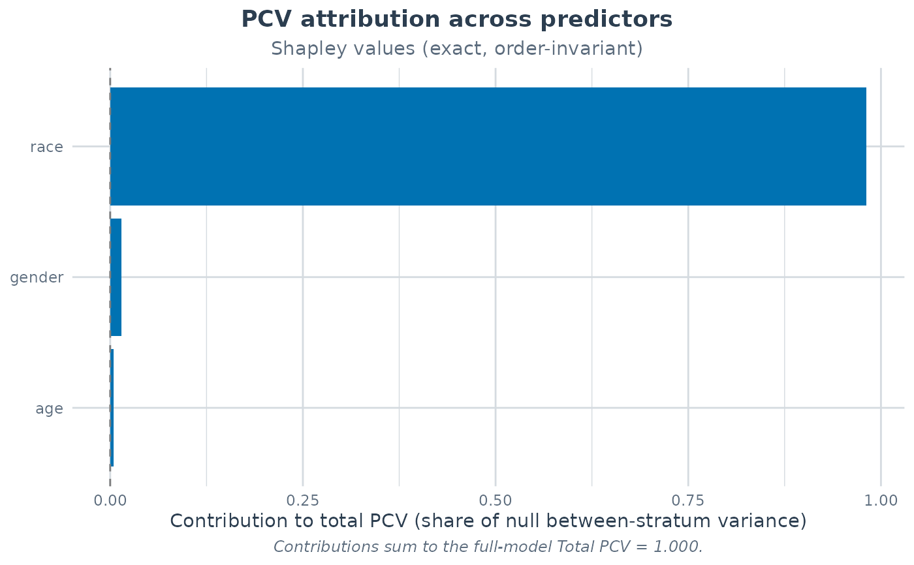

Order-Invariant PCV Attribution Across Predictors (Shapley / Dominance)
Source:R/pcv_importance.R
pcv_importance.RdApportions the between-stratum variance reduction (the PCV) among a set of
predictors. Where stepwise_pcv adds the variables one at a
time – so each variable's contribution depends on its entry order –
pcv_importance() treats the PCV as a value function over variable
subsets and attributes it fairly: the flagship "shapley"
method averages each variable's marginal PCV over every possible entry
order, and "dominance" adds Budescu's pairwise dominance detail (its
general dominance weights coincide with the Shapley values). All methods
satisfy the efficiency identity: the contributions sum exactly to
the full model's total PCV. (The order-dependent "sequential" method
is deprecated; use stepwise_pcv for the sequential
path – see the method argument.)
Two attribution targets are useful in a MAIHDA. Passing the stratum
dimensions (e.g. c("gender", "race", "education")) splits the
additive share – the canonical null-to-adjusted PCV – fairly across the
dimensions: which social dimension drives the additive between-stratum
inequality. Passing individual-level covariates gives an
order-invariant counterpart to stepwise_pcv(): how much each
covariate explains of the between-stratum variance (subject to the
latent-scale caveat below for non-Gaussian families).
Usage
pcv_importance(
data,
outcome,
vars,
method = c("shapley", "sequential", "dominance"),
approx = c("exact", "montecarlo"),
n_perm = 2000,
engine = "lme4",
family = "gaussian",
context = NULL,
sampling_weights = NULL,
bootstrap = FALSE,
n_boot = 1000,
conf_level = 0.95,
estimation = c("fitted", "ML")
)Arguments
- data
Data frame with observations. Ensure
make_stratawas run first so thestratumvariable exists.- outcome
Character string; the dependent variable.
- vars
Character vector of predictors (stratum dimensions and/or covariates) among which the PCV is apportioned. Order does not affect the
"shapley"and"dominance"results; it defines the path for"sequential".- method
Attribution method:
"shapley"(default; order-invariant Shapley values) or"dominance"(Budescu dominance analysis: general dominance – equal to the Shapley values – plus the conditional and complete dominance detail)."sequential"(the order-dependent one-at-a-time path) is deprecated and will be removed in a future release: it still runs but warns, andstepwise_pcvis the supported sequential decomposition – it additionally reports the step-specificStep_PCVand, for a binary outcome, the discriminatory-accuracy trajectory (AUC, MOR).- approx
For
method = "shapley"only:"exact"fits all \(2^k - 1\) non-empty variable subsets (plus the null);"montecarlo"samplesn_permrandom entry orders instead. Whenapproxis not supplied it defaults to"exact"for up to 10 variables and switches to"montecarlo"(with a message) beyond."sequential"needs only the \(k\) path models and ignoresapprox;"dominance"requires every subset, so it errors ifapprox = "montecarlo"is requested.- n_perm
Number of random permutations for
approx = "montecarlo". Default 2000. Distinct subset fits are cached, so the number of model fits is bounded bymin(2^k, n_perm * (k - 1) + k + 1); set a seed (set.seed()) for reproducible sampling.- engine
Modeling engine ("lme4", "brms", "wemix", or "ordinal"); default "lme4". Resolved exactly as in
stepwise_pcv: switches to "wemix" whensampling_weightsis supplied and to "ordinal" for an ordinal family or ordered-factor outcome. Exact attribution withengine = "brms"refits a Stan model for every subset and is strongly discouraged beyond a handful of variables (see Details).- family
Error distribution and link function. Default "gaussian"; a binary or ordered-factor outcome is auto-detected when
familyis left unspecified, mirroringstepwise_pcv.- context
Optional higher-level context column(s) (e.g.
"school"), forwarded to every subset fit so each model carries the crossed(1 | context)intercept alongside the stratum effect; the attribution is then of the between-stratum PCV net of the context, exactly as instepwise_pcv.lme4/brmsengines only.- sampling_weights
Optional name of a sampling-weight column for design-weighted fits; see
fit_maihda. The weight column joins the complete-case filter so every subset fit uses the same analytic sample.- bootstrap
Logical; compute parametric-bootstrap confidence intervals for each contribution by refitting every subset model on responses simulated from the full model. lme4 engine and exact attribution only; the cost is
n_boottimes the number of subset models (up ton_boot * 2^krefits). Default FALSE.- n_boot
Number of bootstrap draws if
bootstrap = TRUE. Default 1000.- conf_level
Confidence level for bootstrap intervals. Default 0.95.
- estimation
Variance-estimation basis for the between-stratum variances the attribution differences across subset models,
"fitted"(default) or"ML"; seecalculate_pcv. Affects Gaussianlmerfits only.
Value
An object of class maihda_pcv_importance: a list with
- importance
Data frame with one row per variable (in the order of
vars):Contribution(the variable's share of the total PCV, on the PCV scale),Share(Contribution / total_pcv;NAwhen the total PCV is zero), plusMC_SE(Monte-Carlo standard errors,approx = "montecarlo"only) andCI_lower/CI_upper(bootstrap = TRUEonly).- total_pcv
The full-model PCV, \((V_0 - V_{full}) / V_0\); the contributions sum to this value (efficiency).
- null_variance, full_variance
Between-stratum variance of the null and the full (all-
vars) model.- subsets
Data frame of every subset model fit: the variables in the subset, its size, between-stratum variance, and PCV \(v(S)\).
- conditional, complete_dominance
method = "dominance"only: the conditional dominance matrix (variables x adjustment-set size) and the pairwise complete-dominance matrix.- method, approx, n_perm, n_fits, n_obs, engine, family, context, bootstrap, conf_level, n_boot_ok, estimation
Metadata;
n_fitscounts the distinct models fit (including the null), andestimationis the variance-estimation basis ("fitted"/"ML") put on every subset model's between-stratum variance.
Details
Value function and efficiency. Write \(V_0\) for the null model's
between-stratum variance and \(V(S)\) for the between-stratum variance
after adding the variable subset \(S\) as fixed effects (each put on the
estimation basis – the default "fitted" keeps each lmer
fit's own REML variance, "ML" refits it with maximum likelihood –
exactly as in calculate_pcv and stepwise_pcv, so
all attributions live on the same scale as the rest of the package). The value
function is \(v(S) = (V_0 - V(S)) / V_0\) – the total PCV of the model
that adds \(S\) – and the Shapley contribution of variable \(i\)
averages its marginal PCV \(v(S \cup \{i\}) - v(S)\) over all subsets with
the usual Shapley weights. Because every permutation's marginals telescope
to \(v(N)\), the contributions of every method here (including the
Monte-Carlo approximation, for any n_perm) sum exactly to the
full-model total PCV. This is the multilevel-PCV analogue of the LMG /
Shorrocks-Shapley decomposition of \(R^2\) (Groemping 2006; Shorrocks 2013).
Sequential method (deprecated) vs. stepwise_pcv(). The
"sequential" method is deprecated in favour of
stepwise_pcv, which owns the sequential trajectory and also
reports the Step_PCV column and the discriminatory-accuracy path.
While it remains, its contributions are the increments in total PCV
along the entry order, \(v(\{x_1..x_i\}) - v(\{x_1..x_{i-1}\})\) – i.e.
diff(c(0, Total_PCV)) of the stepwise_pcv table, so
they sum to the same total. They are not the Step_PCV column,
which normalises each step by the previous step's variance rather
than by \(V_0\).
Exact vs. Monte-Carlo cost. The exact attribution fits
\(2^k - 1\) non-empty subset models plus the null – \(2^k\) fits in
total, with every fit cached and reused across all marginal differences:
256 fits at \(k = 8\), 1024 at
\(k = 10\). That is feasible for lme4 but quickly infeasible
beyond, and each of those fits is a separate Stan run under
engine = "brms" – exact attribution on brms is therefore strongly
discouraged except for very small \(k\). The Monte-Carlo route samples
n_perm entry orders (unbiased for the Shapley values, since a
uniform random permutation reproduces the Shapley weights), reports a
per-variable Monte-Carlo standard error, and warns when the largest
MC_SE exceeds 0.01 on the PCV scale (increase n_perm).
Latent-scale families and rescaling. For binomial/ordinal (and, in
attenuated form, count) families, adding a predictor that varies
within strata rescales the latent metric, so its marginal PCV mixes
explained variance with rescaling (see the latent-scale note in
calculate_pcv); Shapley values of the PCV inherit this.
Attribution among the stratum dimensions – constant within each
stratum – is largely unaffected.
Suppression and negative contributions. The PCV can be negative,
so a contribution (and its Share) can be negative or exceed 100%.
Efficiency still holds; contributions are reported signed and no
non-negative normalisation is applied. A negative Shapley contribution
flags a suppressor-style variable whose inclusion tends to raise the
between-stratum variance.
Bootstrap. With bootstrap = TRUE the whole attribution is
bootstrapped: responses are simulated from the full model and every subset
model is refit per draw (lme4::refit), giving percentile intervals
per contribution – n_boot times n_fits refits, so gate it by
cost. Available for engine = "lme4" with exact attribution (any
method); the Monte-Carlo approximation already carries its own
sampling error and is not combined with the bootstrap. As in
calculate_pcv, refit() holds a glmer.nb
dispersion parameter fixed at its original estimate.
Reproducibility
approx = "montecarlo" draws random permutations with the session RNG;
call set.seed() first for reproducible results. The exact methods are
deterministic.
References
Budescu, D. V. (1993). Dominance analysis: a new approach to the problem of relative importance of predictors in multiple regression. Psychological Bulletin, 114(3), 542-551.
Groemping, U. (2006). Relative importance for linear regression in R: the package relaimpo. Journal of Statistical Software, 17(1), 1-27.
Shorrocks, A. F. (2013). Decomposition procedures for distributional analysis: a unified framework based on the Shapley value. Journal of Economic Inequality, 11, 99-126.
See also
stepwise_pcv for the sequential path with the
discriminatory-accuracy trajectory, calculate_pcv for the
two-model PCV and the latent-scale caveat, and maihda for
the canonical null-vs-adjusted decomposition.
Examples
# \donttest{
strata <- make_strata(maihda_sim_data, c("gender", "race"))
# Order-invariant split of the PCV across the two dimensions and age
imp <- pcv_importance(strata$data, "health_outcome", c("gender", "race", "age"))
print(imp)
#> PCV Attribution Across Predictors
#> =================================
#>
#> Method: Shapley values (exact)
#> Outcome: health_outcome Engine: lme4 (gaussian(identity))
#> Analytic sample: 500 observations; 8 models fit (incl. null).
#> Variance basis: as fitted (REML for Gaussian lmer, matching summary())
#>
#> Between-stratum variance: null 26.714703 -> full model 3.031709
#> Total PCV (null -> all variables): 0.8865
#>
#> Variable Contribution Share
#> gender -0.0934 -10.5%
#> race 0.9830 +110.9%
#> age -0.0031 -0.3%
#> Total 0.8865 100.0%
#>
#> Contributions are shares of the null model's between-stratum variance
#> explained (the PCV scale) and sum to the full-model Total PCV (efficiency).
#> Negative contributions flag suppression: the variable tends to RAISE the
#> between-stratum variance; signed values are reported (no normalisation).
#>
plot(imp)

# Dominance analysis: adds conditional / complete dominance detail
pcv_importance(strata$data, "health_outcome", c("gender", "race", "age"),
method = "dominance")
#> PCV Attribution Across Predictors
#> =================================
#>
#> Method: Dominance analysis (general dominance = Shapley)
#> Outcome: health_outcome Engine: lme4 (gaussian(identity))
#> Analytic sample: 500 observations; 8 models fit (incl. null).
#> Variance basis: as fitted (REML for Gaussian lmer, matching summary())
#>
#> Between-stratum variance: null 26.714703 -> full model 3.031709
#> Total PCV (null -> all variables): 0.8865
#>
#> Variable Contribution Share
#> gender -0.0934 -10.5%
#> race 0.9830 +110.9%
#> age -0.0031 -0.3%
#> Total 0.8865 100.0%
#>
#> Contributions are shares of the null model's between-stratum variance
#> explained (the PCV scale) and sum to the full-model Total PCV (efficiency).
#> Negative contributions flag suppression: the variable tends to RAISE the
#> between-stratum variance; signed values are reported (no normalisation).
#>
#> Conditional dominance (average marginal PCV by adjustment-set size):
#> size_0 size_1 size_2
#> gender -0.1553 -0.0907 -0.0344
#> race 0.9336 0.9858 1.0297
#> age 0.0167 -0.0003 -0.0257
#> Complete dominance: race > gender, race > age, age > gender
# Monte-Carlo approximation (set a seed for reproducibility)
set.seed(42)
pcv_importance(strata$data, "health_outcome", c("gender", "race", "age"),
approx = "montecarlo", n_perm = 500)
#> PCV Attribution Across Predictors
#> =================================
#>
#> Method: Shapley values (Monte-Carlo, 500 permutations)
#> Outcome: health_outcome Engine: lme4 (gaussian(identity))
#> Analytic sample: 500 observations; 8 models fit (incl. null).
#> Variance basis: as fitted (REML for Gaussian lmer, matching summary())
#>
#> Between-stratum variance: null 26.714703 -> full model 3.031709
#> Total PCV (null -> all variables): 0.8865
#>
#> Variable Contribution Share MC_SE
#> gender -0.0888 -10.0% 0.0029
#> race 0.9798 +110.5% 0.0027
#> age -0.0046 -0.5% 0.0009
#> Total 0.8865 100.0%
#>
#> Contributions are shares of the null model's between-stratum variance
#> explained (the PCV scale) and sum to the full-model Total PCV (efficiency).
#> Negative contributions flag suppression: the variable tends to RAISE the
#> between-stratum variance; signed values are reported (no normalisation).
#>
# }